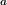
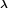
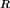

Parametric stationary covariance models¶
 be a multivariate
stationary normal process where
be a multivariate
stationary normal process where  . The process
is supposed to be zero mean. It is entirely defined by its covariance
function
. The process
is supposed to be zero mean. It is entirely defined by its covariance
function
 ,
defined by
for all .
,
defined by
for all . is a lattice.
is a lattice. .
.The multivariate exponential model
This model defines the covariance function by:
(1)¶
where ![\mat{R} \in \mathcal{M}_{d \times d}([-1, 1])](../../_images/math/8c0b2612b535b950b468287b3f1140d3d3550c3d.svg) is a
correlation matrix,
is defined by:
is a
correlation matrix,
is defined by:
(2)¶
and is defined by:
(3)¶
with and for any  .
.
We call  the amplitude vector and
 the scale vector.
The expression of is the combination of:
the matrix  that models the spatial correlation between the components of the process
 at any vertex
at any vertex
 (since the process is stationary):
(since the process is stationary):(4)¶
the matrix that models the correlation between the marginal random variables
 and :
and :
the matrix
 that models the variance of each marginal
random variable:
that models the variance of each marginal
random variable:
This model is such that:
(5)¶
It is possible to define the exponential model from the spatial covariance matrix rather than the correlation matrix :
(6)¶
API:
See
ExponentialModelSee
MaternModel
Examples: